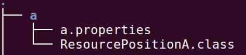
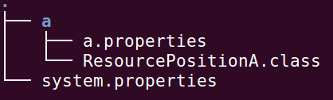
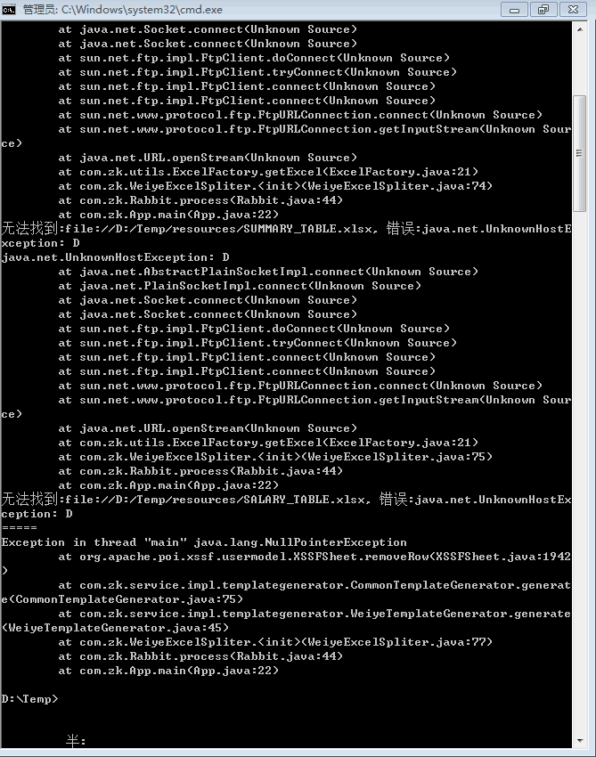
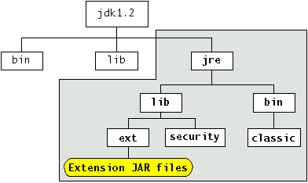
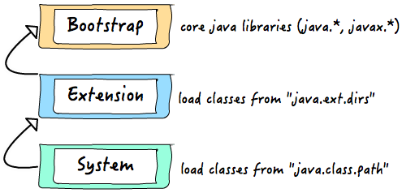
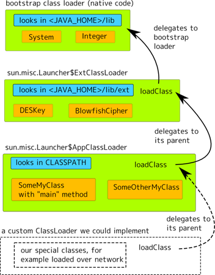

Java Command
编译
|
|
Main.java 放在前面还是放在后面都可以编译成功
- -d: 指定编译之后类保存的目录，目录必须提前创建好
在引用 maven repository 库的时候，必须明确指定 jar 文件的名称，因为 Maven 在下载的时候可能会同时下载 source.jar 和 lib.jar ，会造成引入错误，所以必须明确指定:
|
|
运行
运行的时候必须站在包的顶级目录执行:
|
|
运行 jar
官方示例:
|
|
可是 mybatis-generator-core-1.3.6-SNAPSHOT.jar 要依赖 mysql-connector ，所以应该添加 classpath，而 -cp 和 -jar 这两个命令是不能同时使用的，所以唯有指定 main class 这种办法了:
|
|
其中 main 方法所在的类，是通过搜过 mybatis-generator 的源代码找到的:
|
|
反编译
javap: Disassembles one or more class files
-c: Prints disassembled code, for example, the instructions that comprise the Java bytecodes, for each of the methods in the class.
|
|
jar 包
| 命令 | 操作 |
|---|---|
jar cf jar-file input-file(s) |
创建一个 JAR 文件 |
jar tf jar-file |
查看 JAR 内容 |
jar xf jar-file |
提取内容 |
java -jar app.jar |
运行 JAR 文件 |
- -c: 创建
- -f: 你想要输出到文件，而不是命令行
- -m: 你想要从一个已经存在的文件合并消息到 manifest 文件中
- -t: 列举包的 table
|
|
manifest.txt 文件内容如下所示:
|
|
创建出来的 MANIFEST.MF 文件如下所示:
|
|
添加 Main-Class:
- -e: entrypoint
|
|
打包 resources:
打包的过程是严格按照路径结构来的:
|
|
生成的 log4jtest.jar 的目录结构如下所示:
|
|
jps - 列举运行的 JVM 信息
- -m: 列举传递给
main方法的参数 - -l: 列举完整的包名或完整的 JAR 文件的路径
- -v: 列举传递给
JVM的参数
Java 资源加载
目录:

a.properties 和 ResourcePositionA.class 位于同一级目录(同一个包)下，a.properties 挪到其它地方就找不到了:
|
|
目录:

system.properties 位于顶级目录，system.properties 挪到其它地方就找不到了，在 ResourcePositionA.java 中有如下代码:
|
|
从顶级目录获取资源也可以使用 this.getClass().getResource() 方法:
|
|
还有一种 getResource 的方法:
|
|
ClassLoader can be passed (shared) when creating a new thread using Thread.setContextClassLoader, so that different thread contexts can load each other classes/resources. If not set, the default is the ClassLoader context of the parent Thread. This method is not appropriate if we want to load resources inside the packages unless we use complete paths starting from root.
Log4j 查找 log4j.properties 的逻辑:
|
|
编译:
|
|
无论将 log4j.properties 放到编译后的类文件旁边，还是直接打包进 jar 包中，都可以实现加载与查找。站在 output 文件夹执行命令:
|
|
执行命令如下所示:
|
|
执行结果:
|
|
具体源代码可以参考 log4j 的 github 的两个源文件:
org.apache.log4j.helpers.Loader.javaorg.apache.log4j.LogManager.java
使用 Maven 或者 Gradle 帮助我们编译项目的时候，资源文件需要放到 resources 目录下面:
编译之后，aa.txt 会拷贝到 target/classes/ 目录下面:
当尝试从 Jar 文件中读取资源的时候，遇到如下问题:
|
|
以下是 stackoverflow 给出的解释:
You cannot do this
|
|
与此相对应，我就是使用了这样的错误获取资源的方法:
|
|
it is not a file! When you run from the ide you don’t have any error, because you don’t run a jar file. In the IDE classes and resources are extracted on the file system.
But you can open an InputStream in this way:
|
|
Remove “/resource”. Generally the IDEs separates on file system classes and resources. But when the jar is created they are put all together. So the folder level “/resource” is used only for classes and resources separation.
When you get a resource from classloader you have to specify the path that the resource has inside the jar, that is the real package hierarchy.
或者通过 URL 自身携带的方法 java.net.URL#openStream()) 转为 InputStream 来操作
文件转为 URL 的方法:
|
|
注意文件转为 URL 意味着什么，路径 /home/abc - def.jar 将会被转化为:
|
|
|
|
想要转为正常路径:
|
|
另外千万不要傻傻的自己来拼接 URL:
|
|
在 UNIX 系统上可能还发现没问题，但是到 Windows 系统上直接 GG:

Extensions
installed extensions: 放在 lib/ext 目录下面的 jar 包

生成 jar 包:
|
|
编译:
|
|
运行:
|
|
Download Extensions: 每次都需要下载，略过
Understanding Extension Class Loading
class 寻找路径:
|
|

JVM 的各提供商使用本地代码来实现 Bootstrap 类加载器。
类加载特性:
- 延迟加载
- 当一个类被加载时,它的所有父类都必须被加载
- 类缓存: 当一个类已经被请求,被类加载器加载之后,就会在 JVM 运行期间一直驻留在内存。当再次被请求时,就不需要再次加载,直接调用就可以了。
- 独立的命名空间:不同的类加载器有自己独立的命名空间。例如
Bootstrap类加载器加载了com.test.ClassA,System类加载器加载了com.test.ClassB, 那么这两个类将被当作不同包中的类,它们之间的私有成员不能互相访问。

自定义类加载器:
在 J2SE 中提供了两个默认的实现类, SecureClassLoader 和 URLClassLoader 。SecureClassLoader 是对 ClassLoader 类的包装, 它使用了 Java 安全模型机制。 URLClassLoader 是 SecureClassLoader 的子类, 用于定位磁盘和网络上的 Jar 和类文件。Extension 类加载器和 System 类加载器均继承自 URL 类加载器。
得到当前程序的所有 classpath:
|
|
创建一个 Extensible 应用
- Extensible application: 你可以不用修改它原来的 code base，就能 extend 的应用，可理解为插件或者模块话
- Service: 一系列提供某些功能的接口
- Service provider interface (SPI): 一个 Service 所定义的开放接口或抽象类
- Service Provider: 实现了 SPI
SPI 的全名为 Service Provider Interface.大多数开发人员可能不熟悉，因为这个是针对厂商或者插件的。在 java.util.ServiceLoader 的文档里有比较详细的介绍。简单的总结下 java spi 机制的思想。我们系统里抽象的各个模块，往往有很多不同的实现方案，比如日志模块的方案，xml 解析模块、jdbc 模块的方案等。面向的对象的设计里，我们一般推荐模块之间基于接口编程，模块之间不对实现类进行硬编码。一旦代码里涉及具体的实现类，就违反了可拔插的原则，如果需要替换一种实现，就需要修改代码。为了实现在模块装配的时候能不在程序里动态指明，这就需要一种服务发现机制。 java spi 就是提供这样的一个机制：为某个接口寻找服务实现的机制。有点类似 IOC 的思想，就是将装配的控制权移到程序之外，在模块化设计中这个机制尤其重要。
java spi 的具体约定为:当服务的提供者，提供了服务接口的一种实现之后，在 jar 包的 META-INF/services/ 目录里同时创建一个以服务接口命名的文件。该文件里就是实现该服务接口的具体实现类。而当外部程序装配这个模块的时候，就能通过该 jar 包 META-INF/services/ 里的配置文件找到具体的实现类名，并装载实例化，完成模块的注入。 基于这样一个约定就能很好的找到服务接口的实现类，而不需要再代码里制定。jdk 提供服务实现查找的一个工具类：java.util.ServiceLoader
用法示例:
|
|
注册:
把一个文件放在 META-INF/services 目录下，文件名: 类的全名，文件必须 UTF-8 编码，在开头可以使用 # 来注释
配置文件为什么要放在 META-INF/services 下面:
ServiceLoader 源码已经写死了
|
|
ServiceLoader 读取实现类是什么时候实例化的:
ServiceLoader.LazyIterator.nextService 中实例化，即 load 的结果迭代时才会被实例化。
ServiceLoader 类: 帮助你查找、加载、使用 service providers，他会搜索你的 class path 来查找 service provider，ServiceLoader 被 final 声明，意味着你无法覆盖它的算法
|
|
- java.ext.dirs: 指定从哪里加载 extension mechanism 所需要的类，通常用来给 JRE 或其他库添加功能